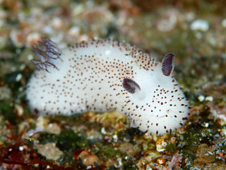
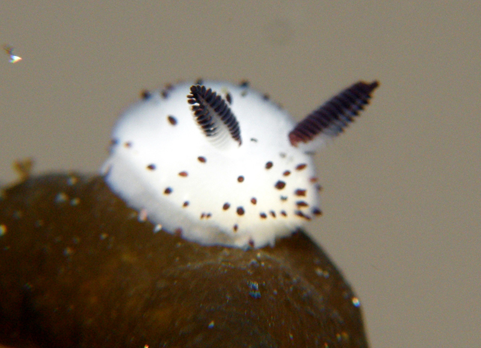

¿Qué son los conejos marinos?
El Jorunna Parva, también conocido como conejo marino son nudibranquios, moluscos marinos sin concha conocidos por su aspecto similar a los seres lagomorfos. Reciben su nombre por las pequeñas estructuras parecidas a orejas que sobresalen de su cabeza, llamadas rinóforos.
Hábitat y características
Habitan en aguas cálidas del Pacífico, especialmente cerca de Japón, Filipinas y Australia. Son animales pequeños, usualmente de menos de 3 centímetros, y se alimentan de algas o esponjas marinas.
Curiosidades
No tienen esqueleto ni concha.
Existen más de 3.000 especies diferentes de nudibranquios.
Algunos pueden almacenar toxinas de su comida para protegerse de depredadores.

